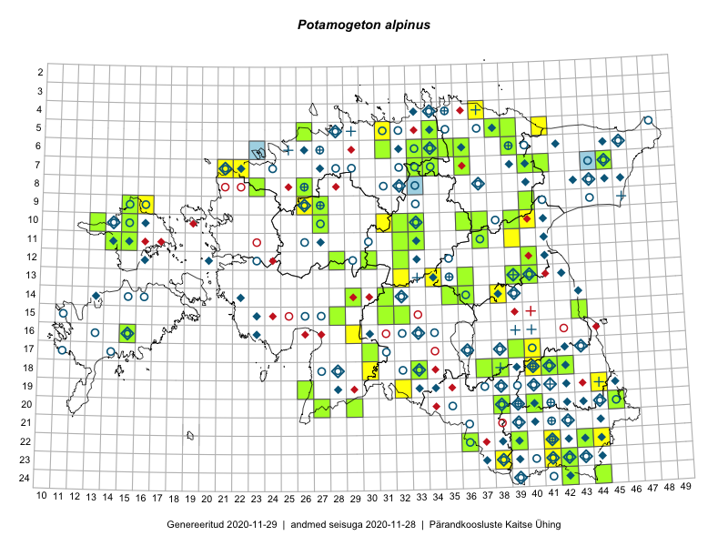

Potamogeton alpinus — ruske penikeel
Potamogetonaceae :: Potamogeton alpinus Balb. (631); Potamogeton alpinus f. longifolius (Laest. ex Fries) Fisch. (9); Potamogeton rufescens Schrad. (3)

Kaart põhineb 650 kirjel:
vaatlusi 174
herbaareksemplare 469
ELFi kirjeid1 7
Taime kaasaegsed ja ajaloolised leiukohad asuvad 209 ruudus.
Tingmärgid ja leidudega ruutude arvud periooditi uues (u) ja 2005 andmestikus (v)
| █ | vahemik | u2 | v3 |
|---|---|---|---|
| █ | 2006–2020 | 95 | – |
| ◆/◇ | 1971–2005 | 97 | 120 |
| ○ | 1921–1970 | 98 | 31 |
| + | kuni 1920 | 22 | 1 |
| × | hävinud | – | 0 |
| ? | kaheldav | – | 0 |
| Ruut | Leidja(d) | Leiuaeg | Kirje |
|---|---|---|---|
| 18-33 | Ott Luuk, Jaak-Albert Metsoja | 2020-08-21 | ruut/ala: Potamogeton alpinus Balb. |
| 18-33 | Ott Luuk | 2020-08-21 | TAA0154209: Potamogeton alpinus Balb. |
| 18-33 | Ott Luuk | 2020-08-21 | TAA0154210: Potamogeton alpinus Balb. |
| 13-39 | Peedu Saar | 2020-07-27 | TAA0153499: Potamogeton alpinus Balb. |
| 18-41 | Peedu Saar, Ott Luuk | 2019-09-24 | TAA0149501: Potamogeton alpinus Balb. |
| 10-39 | Toomas Kukk, Thea Kull | 2019-09-10 | TAA0148545: Potamogeton alpinus Balb. |
| 05-26 | Ott Luuk, Peedu Saar | 2019-09-02 | TAA0152224: Potamogeton alpinus Balb. |
| 13-32 | Ott Luuk, Eerik Leibak | 2019-08-29 | ruut/ala: Potamogeton alpinus Balb. |
| 07-36 | Ott Luuk, Jaak-Albert Metsoja | 2019-08-05 | TAA0151644: Potamogeton alpinus Balb. |
| 10-33 | Ott Luuk | 2019-07-31 | TAA0150141: Potamogeton alpinus Balb. |
| 10-32 | Ott Luuk | 2019-07-31 | TAA0150142: Potamogeton alpinus Balb. |
| 10-32 | Ott Luuk | 2019-07-31 | TAA0152218: Potamogeton alpinus Balb. |
| 10-32 | Ott Luuk | 2019-07-31 | TAA0152219: Potamogeton alpinus Balb. |
| 10-32 | Ott Luuk | 2019-07-31 | TAA0152220: Potamogeton alpinus Balb. |
| 12-40 | Peedu Saar | 2019-07-30 | TAA0149517: Potamogeton alpinus Balb. |
| 07-22 | Peedu Saar | 2019-07-24 | ruut/ala: Potamogeton alpinus Balb. |
| 07-45 | Helle Mäemets, Kadi Palmik-Das | 2019-07-17 | punkt: Potamogeton alpinus Balb. |
| 18-38 | Peedu Saar, Ott Luuk | 2019-07-15 | TAA0149524: Potamogeton alpinus Balb. |
| 17-39 | Thea Kull | 2019-07-12 | TAA0148005: Potamogeton alpinus Balb. |
| 22-44 | Ott Luuk, Tiit Hallikma | 2019-07-12 | ruut/ala: Potamogeton alpinus Balb. |
| 22-39 | Peedu Saar, Timo Luhamäe | 2019-07-10 | TAA0149536: Potamogeton alpinus Balb. |
| 18-42 | Thea Kull | 2019-07-09 | TAA0147925: Potamogeton alpinus Balb. |
| 20-40 | Indrek Tammekänd, Toomas Kukk | 2019-07-09 | TAA0151764: Potamogeton alpinus Balb. |
| 20-45 | Indrek Tammekänd | 2019-07-07 | TAA0151772: Potamogeton alpinus Balb. |
| 10-40 | Thea Kull, Toomas Kukk | 2019-06-13 | punkt: Potamogeton alpinus Balb. |
| 14-31 | Indrek Tammekänd, Eike Vunk | 2019-06-09 | TAA0151777: Potamogeton alpinus Balb. |
| 11-32 | Indrek Tammekänd | 2019-06-07 | TAA0151779: Potamogeton alpinus Balb. |
| 10-13 | Indrek Tammekänd, Toomas Kukk | 2019-06-02 | TAA0151780: Potamogeton alpinus Balb. |
| 06-39 | Toomas Kukk, Peedu Saar | 2018-09-03 | TAA0146272: Potamogeton alpinus Balb. |
| 06-39 | Toomas Kukk, Peedu Saar | 2018-09-03 | TAA0146273: Potamogeton alpinus Balb. |
| 06-39 | Toomas Kukk, Peedu Saar | 2018-09-03 | TAA0146274: Potamogeton alpinus Balb. |
| 10-27 | Ott Luuk | 2018-08-16 | TAA0144790: Potamogeton alpinus Balb. |
| 10-27 | Ott Luuk | 2018-08-16 | TAA0144791: Potamogeton alpinus Balb. |
| 06-31 | Toomas Kukk, Peedu Saar | 2018-08-07 | TAA0146509: Potamogeton alpinus Balb. |
| 06-31 | Toomas Kukk, Peedu Saar | 2018-08-07 | TAA0146510: Potamogeton alpinus Balb. |
| 12-28 | Indrek Tammekänd | 2018-08-02 | TAA0147813: Potamogeton alpinus Balb. |
| 10-31 | Ott Luuk | 2018-08-01 | punkt: Potamogeton alpinus Balb. |
| 11-37 | Peedu Saar, Toomas Kukk | 2018-06-22 | TAA0146878: Potamogeton alpinus Balb. |
| 06-36 | Toomas Kukk, Peedu Saar | 2017-09-27 | TAA0141943: Potamogeton alpinus Balb. |
| 06-36 | Toomas Kukk, Peedu Saar | 2017-09-27 | TAA0141944: Potamogeton alpinus Balb. |
| 20-29 | Ott Luuk | 2017-08-30 | TAA0142882: Potamogeton alpinus Balb. |
| 20-29 | Ott Luuk | 2017-08-30 | TAA0142883: Potamogeton alpinus Balb. |
| 15-43 | Peedu Saar, Ott Luuk | 2017-08-21 | TAA0141038: Potamogeton alpinus Balb. |
| 14-35 | Ott Luuk | 2017-08-16 | TAA0142884: Potamogeton alpinus Balb. |
| 14-36 | Indrek Tammekänd | 2017-08-16 | TAA0143476: Potamogeton alpinus Balb. |
| 14-29 | Toomas Kukk, Ilmar Uibopuu | 2017-08-11 | TAA0141605: Potamogeton alpinus Balb. |
| 14-29 | Toomas Kukk, Ilmar Uibopuu | 2017-08-11 | TAA0141606: Potamogeton alpinus Balb. |
| 14-29 | Toomas Kukk, Ilmar Uibopuu | 2017-08-11 | TAA0141607: Potamogeton alpinus Balb. |
| 14-29 | Toomas Kukk, Ilmar Uibopuu | 2017-08-11 | TAA0141608: Potamogeton alpinus Balb. |
| 04-37 | Katrit Karus, Tõnu Feldmann | 2017-08-10 | ruut/ala: Potamogeton alpinus Balb. |
| 05-41 | Katrit Karus, Tõnu Feldmann | 2017-08-09 | ruut/ala: Potamogeton alpinus Balb. |
| 08-26 | Toomas Kukk, Ilmar Uibopuu, Kadri Kuusksalu | 2017-08-08 | TAA0141677: Potamogeton alpinus Balb. |
| 08-26 | Toomas Kukk, Ilmar Uibopuu, Kadri Kuusksalu | 2017-08-08 | TAA0141678: Potamogeton alpinus Balb. |
| 09-27 | Meeli Mesipuu, Indrek Tammekänd | 2017-08-08 | TAA0145016: Potamogeton alpinus Balb. |
| 12-32 | Thea Kull, Ott Luuk | 2017-08-07 | TAA0142304: Potamogeton alpinus Balb. |
| 13-34 | Peedu Saar, Timo Luhamäe | 2017-08-07 | ruut/ala: Potamogeton alpinus Balb. |
| 19-44 | Helle Mäemets, Kadi Palmik | 2017-08-02 | ruut/ala: Potamogeton alpinus Balb. |
| 19-44 | Helle Mäemets, Kadi Palmik | 2017-08-02 | punkt: Potamogeton alpinus Balb. |
| 08-23 | Toomas Kukk, Ilmar Uibopuu | 2017-07-30 | TAA0141759: Potamogeton alpinus Balb. |
| 08-23 | Toomas Kukk, Ilmar Uibopuu | 2017-07-30 | TAA0141760: Potamogeton alpinus Balb. |
| 22-36 | Peedu Saar, Ott Luuk | 2017-07-28 | TAA0141044: Potamogeton alpinus Balb. |
| 22-39 | Peedu Saar, Ott Luuk | 2017-07-27 | TAA0141043: Potamogeton alpinus Balb. |
| 20-38 | Peedu Saar, Ott Luuk | 2017-07-25 | TAA0141046: Potamogeton alpinus Balb. |
| 06-33 | Peedu Saar, Ott Luuk | 2017-07-21 | TAA0141051: Potamogeton alpinus Balb. |
| 06-35 | Peedu Saar, Ott Luuk | 2017-07-19 | TAA0141053: Potamogeton alpinus Balb. |
| 06-34 | Ott Luuk | 2017-07-19 | TAA0142869: Potamogeton alpinus Balb. |
| 07-22 | Helle Mäemets, Kadi Palmik | 2017-07-15 | ruut/ala: Potamogeton alpinus Balb. |
| 07-21 | Helle Mäemets, Kadi Palmik | 2017-07-15 | ruut/ala: Potamogeton alpinus Balb. |
| 07-22 | Helle Mäemets, Kadi Palmik | 2017-07-15 | punkt: Potamogeton alpinus Balb. |
| 09-26 | Helle Mäemets, Kadi Palmik | 2017-07-14 | ruut/ala: Potamogeton alpinus Balb. |
| 18-40 | Helle Mäemets, Kadi Palmik-Das | 2017-07-05 | punkt: Potamogeton alpinus Balb. |
| 18-40 | Helle Mäemets, Kadi Palmik | 2017-07-05 | ruut/ala: Potamogeton alpinus Balb. |
| 17-40 | Helle Mäemets, Kadi Palmik | 2017-07-05 | punkt: Potamogeton alpinus Balb. |
| 11-39 | Tõnu Feldmann, Katrit Karus | 2017-07-04 | ruut/ala: Potamogeton alpinus Balb. |
| 10-33 | Katrit Karus, Tõnu Feldmann | 2017-07-03 | ruut/ala: Potamogeton alpinus Balb. |
| 18-33 | Helle Mäemets, Kadi Palmik | 2017-07-03 | ruut/ala: Potamogeton alpinus Balb. |
| 18-33 | Helle Mäemets, Kadi Palmik | 2017-07-03 | punkt: Potamogeton alpinus Balb. |
| 18-30 | Helle Mäemets, Kadi Palmik | 2017-06-17 | ruut/ala: Potamogeton alpinus Balb. |
| 18-30 | Helle Mäemets, Kadi Palmik | 2017-06-17 | punkt: Potamogeton alpinus Balb. |
| 05-38 | Toomas Kukk, Thea Kull | 2016-09-06 | TAA0136258: Potamogeton alpinus Balb. |
| 10-15 | Sander Laherand, Nele Jõessar, Toomas Kukk | 2016-08-09 | TAA0135848: Potamogeton alpinus Balb. |
| 10-15 | Sander Laherand, Nele Jõessar, Toomas Kukk | 2016-08-09 | TAA0135846: Potamogeton alpinus Balb. |
| 11-15 | Peedu Saar, Thea Kull | 2016-08-09 | TAA0134006: Potamogeton alpinus Balb. |
| 09-40 | Ott Luuk, Eerik Leibak | 2016-08-09 | TAA0145555: Potamogeton alpinus Balb. |
| 09-40 | Ott Luuk, Eerik Leibak | 2016-08-09 | TAA0145556: Potamogeton alpinus Balb. |
| 10-39 | Ott Luuk, Eerik Leibak | 2016-08-03 | TAA0139290: Potamogeton alpinus Balb. |
| 05-39 | Tiit Hallikma, Ott Luuk | 2016-07-28 | TAA0134503: Potamogeton alpinus Balb. |
| 05-34 | Ott Luuk, Hannes Pehlak | 2016-07-27 | TAA0145747: Potamogeton alpinus Balb. |
| 10-37 | Peedu Saar, Liina Oja, Susanna Vain | 2016-07-25 | TAA0134012: Potamogeton alpinus Balb. |
| 18-37 | Helle Mäemets | 2016-07-24 | TAA2004308: Potamogeton alpinus Balb. |
| 13-36 | Toomas Kukk, Raivo Kalle | 2016-07-22 | TAA0138185: Potamogeton alpinus Balb. |
| 13-36 | Toomas Kukk, Raivo Kalle | 2016-07-22 | TAA0138186: Potamogeton alpinus Balb. |
| 14-29 | Sirje Azarov, Oliver Parrest | 2016-07-22 | ruut/ala: Potamogeton alpinus Balb. |
| 11-33 | Eerik Leibak, Tõnu Ploompuu, Marko Veinbergs | 2016-07-22 | TAA0137985: Potamogeton alpinus Balb. |
| 15-32 | Toomas Kukk, Liina Oja | 2016-07-21 | TAA0138173: Potamogeton alpinus Balb. |
| 15-28 | Tiit Hallikma, Elle Rajandu | 2016-07-21 | TAA0134490: Potamogeton alpinus Balb. |
| 17-30 | Timo Luhamäe, Oliver Parrest | 2016-07-20 | TAA0145293: Potamogeton alpinus Balb. |
| 16-29 | Thea Kull, Hannes Pehlak | 2016-07-20 | ruut/ala: Potamogeton alpinus Balb. |
| 17-30 | Oliver Parrest, Timo Luhamäe | 2016-07-20 | ruut/ala: Potamogeton alpinus Balb. |
| 20-27 | Aat Sarv, Eerik Leibak | 2016-07-19 | TAA0145422: Potamogeton alpinus Balb. |
| 19-26 | Ott Luuk, Hannes Pehlak | 2016-07-18 | TAA0138887: Potamogeton alpinus Balb. |
| 19-26 | Ott Luuk, Hannes Pehlak | 2016-07-18 | TAA0138888: Potamogeton alpinus Balb. |
| 19-32 | Jaak-Albert Metsoja, Mari Metsoja, Lena Neuenkamp | 2016-07-18 | ruut/ala: Potamogeton alpinus Balb. |
| 09-16 | Eeva-Maria Jeletsky, Tarmo Niitla | 2016-07-13 | ruut/ala: Potamogeton alpinus Balb. |
| 14-38 | Kai Rünk, Ülle Jõgar, Illi Tarmu | 2016-06-20 | ruut/ala: Potamogeton alpinus Balb. |
| 22-43 | Toomas Kukk, Tiit Hallikma, Johannes Kõdar | 2016-06-15 | TAA0138045: Potamogeton alpinus Balb. |
| 24-42 | Peedu Saar, Ott Luuk | 2015-08-13 | TAA0116517: Potamogeton alpinus Balb. |
| 09-15 | Toomas Kukk, Eerik Leibak | 2015-08-11 | TAA0135519: Potamogeton alpinus Balb. |
| 09-15 | Toomas Kukk, Eerik Leibak | 2015-08-11 | TAAdupl0135519: Potamogeton alpinus Balb. |
| 13-40 | Peedu Saar | 2015-08-10 | TAA0116520: Potamogeton alpinus Balb. |
| 07-33 | Katrit Karus, Tõnu Feldmann | 2015-08-07 | ruut/ala: Potamogeton alpinus Balb. |
| 05-31 | Katrit Karus, Tõnu Feldmann | 2015-08-04 | ruut/ala: Potamogeton alpinus Balb. |
| 07-41 | Toomas Kukk, Tiit Hallikma | 2015-07-23 | TAA0134233: Potamogeton alpinus Balb. |
| 07-40 | Ott Luuk, Hannes Pehlak | 2015-07-23 | TAA0142997: Potamogeton alpinus Balb. |
| 07-40 | Ott Luuk, Hannes Pehlak | 2015-07-23 | TAA0142998: Potamogeton alpinus Balb. |
| 07-34 | Jana-Maria Habicht | 2015-07-20 | TAM0117477: Potamogeton alpinus Balb. |
| 11-14 | Eeva-Maria Jeletsky, Tarmo Niitla | 2015-06-28 | TAA0119215: Potamogeton alpinus Balb. |
| 15-31 | Toomas Kukk, Tiit Hallikma | 2015-06-10 | TAA0135007: Potamogeton alpinus Balb. |
| 12-30 | Ott Luuk, Hannes Pehlak | 2015-06-09 | TAA0144814: Potamogeton alpinus Balb. |
| 16-15 | Toomas Kukk | 2013-09-11 | TAA0112166: Potamogeton alpinus Balb. |
| 16-15 | Toomas Kukk | 2013-09-11 | TAA0112165: Potamogeton alpinus Balb. |
| 07-45 | Helle Mäemets, Kadi Palmik-Das | 2011-09-06 | punkt: Potamogeton alpinus Balb. |
| 07-33 | Helle Mäemets | 2011-08-30 | TAA2004628: Potamogeton alpinus Balb. |
| 07-33 | Helle Mäemets | 2011-08-30 | TAA2004629: Potamogeton alpinus Balb. |
| 23-42 | Helle Mäemets | 2011-07-20 | punkt: Potamogeton alpinus Balb. |
| 23-42 | Helle Mäemets | 2011-07-20 | TAA2004145: Potamogeton alpinus Balb. |
| 06-23 | Liis Multer, Kuldar Pärn | 2010-08-08 | ELF: 21382 |
| 08-33 | Indrek Hiiesalu | 2010-07-31 | ELF: 18896 |
| 07-33 | Indrek Hiiesalu | 2010-07-17 | ELF: 18857 |
| 07-44 | Alar Soppe | 2009-09-22 | ELF: 13563 |
| 07-44 | Alar Soppe | 2009-09-22 | ELF: 13572 |
| 07-44 | Alar Soppe | 2009-09-18 | ELF: 13574 |
| 10-40 | Alar Soppe | 2009-07-16 | ELF: 13460 |
| 23-38 | Gerda Ratasepp, Katrit Karus, Tõnu Feldmann | 2009-07-06 | punkt: Potamogeton alpinus Balb. |
| 24-44 | Toomas Kukk | 2008-07-27 | TAA0109455: Potamogeton alpinus Balb. |
| 24-44 | Toomas Kukk | 2008-07-27 | TAA0109456: Potamogeton alpinus Balb. |
| 22-41 | Lilian Freiberg, Kertu Ird | 2007-07-09 | punkt: Potamogeton alpinus Balb. |
| 07-45 | Helle Mäemets, Lilian Freiberg | 2006-07-27 | punkt: Potamogeton alpinus Balb. |
| 07-45 | Helle Mäemets, Lilian Freiberg | 2006-07-27 | punkt: Potamogeton alpinus Balb. |
| 07-45 | Helle Mäemets | 2006-07-27 | TAA2002931: Potamogeton alpinus Balb. |
| 23-41 | Helle Mäemets, Kadi Palmik | 2006-07-13 | punkt: Potamogeton alpinus Balb. |
| 10-36 | Reet Laugaste | 2006 | TAA2002317: Potamogeton alpinus Balb. |
| 14-39 | Helle Mäemets, Kadi Palmik | 2005-07-20–2005-07-21 | punkt: Potamogeton alpinus Balb. |
| 23-41 | Helle Mäemets | 2005-07-08 | TAA2002303: Potamogeton alpinus Balb. |
| 04-34 | Tiiu Trei | 2003-08-15 | TAA0118131: Potamogeton alpinus Balb. |
| 07-45 | Helle Mäemets | 2003-08-12 | punkt: Potamogeton alpinus Balb. |
| 07-45 | Helle Mäemets | 2003-07-12 | TAA2001808: Potamogeton alpinus Balb. |
| 23-42 | Helle Mäemets | 2003-07-02 | TAA2002234.C: Potamogeton alpinus Balb. |
| 23-41 | Helle Mäemets, Lilian Freiberg | 2002-06-18 | punkt: Potamogeton alpinus Balb. |
| 23-38 | Lilian Freiberg | 2001-08-01 | TAA2003011: Potamogeton alpinus Balb. |
| 23-39 | Lilian Freiberg | 2001-07-31 | punkt: Potamogeton alpinus Balb. |
| 20-38 | T. Trei | 2001-07-12 | TAA0109511: Potamogeton alpinus Balb. |
| 07-45 | Helle Mäemets | 2001-07-12 | punkt: Potamogeton alpinus Balb. |
| 07-45 | Helle Mäemets | 2001-07-12 | TAA2002469: Potamogeton alpinus Balb. |
| 10-33 | Tiiu Trei | 2001-07-04 | TAA0118440: Potamogeton alpinus Balb. |
| 10-33 | Tiiu Trei | 2001-07-04 | TAA0118439: Potamogeton alpinus Balb. |
| 23-38 | Lilian Freiberg | 2001 | punkt: Potamogeton alpinus Balb. |
| 11-27 | Toomas Kukk | 2000-08-25 | TAA0109531: Potamogeton alpinus Balb. |
| 20-43 | Tiiu Trei | 2000-07-18 | TAA0118420: Potamogeton alpinus Balb. |
| 20-43 | Tiiu Trei | 2000-07-18 | TAA0118419: Potamogeton alpinus Balb. |
| 20-40 | Tiiu Trei | 2000-07-17 | TAA0118442: Potamogeton alpinus Balb. |
| 05-38 | Tiiu Trei | 2000-07-12 | TAA0118313: Potamogeton alpinus Balb. |
| 08-46 | Tõnu Ploompuu | 2000 | ruut/ala: Potamogeton alpinus Balb. |
| 19-38 | Helle Mäemets | 1999-08-20 | TAA2001951: Potamogeton alpinus Balb. |
| 16-30 | Ülo Niinemets | 1999-07-17 | TAA0109486: Potamogeton alpinus Balb. |
| 16-30 | Ülo Niinemets | 1999-07-17 | TAA0109487: Potamogeton alpinus Balb. |
| 10-41 | Tiiu Trei | 1999-07-01 | TAA0118448: Potamogeton alpinus Balb. |
| 10-41 | Tiiu Trei | 1999-07-01 | TAA0118447: Potamogeton alpinus Balb. |
| 18-42 | Tiiu Trei | 1999-06-28 | TAA0118449: Potamogeton alpinus Balb. |
| 20-42 | Helle Mäemets | 1998-07-21 | punkt: Potamogeton alpinus Balb. |
| 20-42 | Helle Mäemets | 1998-07-21 | TAA2003007: Potamogeton alpinus Balb. |
| 19-40 | Helle Mäemets | 1998-07-05 | TAA2003553: Potamogeton alpinus Balb. |
| 14-22 | T. Trei | 1997-07-07 | TAA0109495: Potamogeton alpinus Balb. |
| 09-26 | T. Trei | 1997-07-04 | TAA0109503: Potamogeton alpinus Balb. |
| 17-43 | Tiiu Trei | 1996-08-20 | TAA0118130: Potamogeton alpinus Balb. |
| 17-43 | Tiiu Trei | 1996-08-20 | TAA0118129: Potamogeton alpinus Balb. |
| 20-40 | T. Trei | 1995-07-05 | TAA0109522: Potamogeton alpinus Balb. |
| 10-41 | Tiiu Trei | 1994-07-26 | TAA0118443: Potamogeton alpinus Balb. |
| 18-41 | T. Trei | 1994-07-19 | TAA0109496: Potamogeton alpinus Balb. |
| 06-26 | T. Trei | 1993-07-12 | TAA0109504: Potamogeton alpinus Balb. |
| 07-27 | T. Trei | 1993-07-12 | TAA0109519: Potamogeton alpinus Balb. |
| 12-41 | T. Trei | 1992-07-09 | TAA0109502: Potamogeton alpinus Balb. |
| 14-38 | T. Trei | 1992-07-08 | TAA0109500: Potamogeton alpinus Balb. |
| 18-39 | Aime Mäemets | 1991-07-29 | TAA2002180: Potamogeton alpinus Balb. |
| 22-41 | Aime Mäemets | 1991-07-23 | punkt: Potamogeton alpinus Balb. |
| 22-41 | Aime Mäemets | 1991-07-23 | punkt: Potamogeton alpinus Balb. |
| 22-41 | Aime Mäemets | 1991-07-23 | TAA2002189: Potamogeton alpinus Balb. |
| 22-41 | Aime Mäemets | 1991-07-23 | TAA2002194: Potamogeton alpinus Balb. |
| 18-39 | Aime Mäemets | 1991-07-17–1991-07-29 | punkt: Potamogeton alpinus Balb. |
| 18-39 | Aime Mäemets | 1991-07-17 | TAA2002199: Potamogeton alpinus Balb. |
| 20-38 | T. Trei | 1991-07-16 | TAA0109501: Potamogeton alpinus Balb. |
| 14-13 | Aime Mäemets | 1991-07-09 | punkt: Potamogeton alpinus Balb. |
| 19-40 | Aime Mäemets | 1991-07-08 | TAA2002472: Potamogeton alpinus Balb. |
| 17-38 | Aime Mäemets | 1991-07-03 | punkt: Potamogeton alpinus Balb. |
| 06-32 | Tiiu Trei | 1991-06-14 | TAA0118445: Potamogeton alpinus Balb. |
| 22-42 | Aime Mäemets | 1990-08-03 | punkt: Potamogeton alpinus Balb. |
| 22-42 | Aime Mäemets | 1990-08-03 | punkt: Potamogeton alpinus Balb. |
| 24-42 | Aime Mäemets | 1990-08-01 | punkt: Potamogeton alpinus Balb. |
| 06-34 | Aime Mäemets | 1990-07-07 | punkt: Potamogeton alpinus Balb. |
| 06-34 | Aime Mäemets | 1990-07-06 | punkt: Potamogeton alpinus Balb. |
| 06-32 | Aime Mäemets | 1990-06-20 | punkt: Potamogeton alpinus Balb. |
| 06-32 | Aime Mäemets | 1990-06-19 | punkt: Potamogeton alpinus Balb. |
| 06-32 | Aime Mäemets | 1990-06-19 | TAA2002728.B: Potamogeton alpinus Balb. |
| 14-22 | T. Trei | 1990-06-18 | TAA0109512: Potamogeton alpinus Balb. |
| 14-22 | T. Trei | 1990-06-18 | TAA0109513: Potamogeton alpinus Balb. |
| 14-22 | T. Trei | 1990-06-18 | TAA0109517: Potamogeton alpinus Balb. |
| 14-22 | T. Trei | 1990-06-18 | TAA0109518: Potamogeton alpinus Balb. |
| 19-34 | Aime Mäemets | 1989-07-26 | punkt: Potamogeton alpinus Balb. |
| 18-28 | Tiiu Trei | 1989-07-20 | TAA0118446: Potamogeton alpinus Balb. |
| 18-28 | Tiiu Trei | 1989-07-20 | TAA0118444: Potamogeton alpinus Balb. |
| 18-28 | Tiiu Trei | 1989-07-20 | TAA0118421: Potamogeton alpinus Balb. |
| 18-28 | T. Trei | 1989-07-20 | TAA0109492: Potamogeton alpinus Balb. |
| 18-28 | T. Trei | 1989-07-20 | TAA0109524: Potamogeton alpinus Balb. |
| 18-28 | T. Trei | 1989-07-20 | TAA0109525: Potamogeton alpinus Balb. |
| 23-44 | A. Neitsov | 1989-07-16 | TU266335: Potamogeton alpinus Balb. |
| 11-33 | Tiiu Trei | 1989-07-10 | TAA0118418: Potamogeton alpinus f. longifolius (Laest. ex Fries) Fisch. |
| 22-41 | Aime Mäemets | 1989-07-06 | punkt: Potamogeton alpinus Balb. |
| 22-41 | Aime Mäemets | 1989-07-06 | TAA2003081: Potamogeton alpinus Balb. |
| 14-32 | Tiiu Trei | 1989-07-05 | TAA0118309: Potamogeton alpinus Balb. |
| 21-42 | Aime Mäemets | 1989-07-04 | punkt: Potamogeton alpinus Balb. |
| 21-42 | Aime Mäemets | 1989-07-04 | TAA2003066: Potamogeton alpinus Balb. |
| 20-43 | Tiiu Trei | 1989-06-21 | TAA0118417: Potamogeton alpinus f. longifolius (Laest. ex Fries) Fisch. |
| 20-43 | Tiiu Trei | 1989-06-20 | TAA0118416: Potamogeton alpinus f. longifolius (Laest. ex Fries) Fisch. |
| 20-43 | T. Trei | 1989-06-20 | TAA0109449: Potamogeton alpinus Balb. |
| 20-43 | T. Trei | 1989-06-20 | TAA0109450: Potamogeton alpinus Balb. |
| 20-43 | T. Trei | 1989-06-20 | TAA0109451: Potamogeton alpinus Balb. |
| 18-40 | T. Trei | 1989-06-15 | TAA0109506: Potamogeton alpinus Balb. |
| 22-44 | Tiiu Trei | 1988-07-28 | TAA0118438: Potamogeton alpinus Balb. |
| 22-43 | T. Trei | 1988-07-28 | TAA0109491: Potamogeton alpinus Balb. |
| 22-43 | T. Trei | 1988-07-28 | TAA0109494: Potamogeton alpinus Balb. |
| 22-43 | T. Trei | 1988-07-28 | TAA0109497: Potamogeton alpinus Balb. |
| 22-43 | T. Trei | 1988-07-28 | TAA0109498: Potamogeton alpinus Balb. |
| 22-44 | T. Trei | 1988-07-28 | TAA0109499: Potamogeton alpinus Balb. |
| 22-43 | T. Trei | 1988-07-28 | TAA0109515: Potamogeton alpinus Balb. |
| 22-43 | T. Trei | 1988-07-28 | TAA0109527: Potamogeton alpinus Balb. |
| 13-40 | Aime Mäemets | 1988-07-27 | punkt: Potamogeton alpinus Balb. |
| 13-40 | Aime Mäemets | 1988-07-27 | TAA2003020: Potamogeton alpinus Balb. |
| 13-42 | Aime Mäemets | 1988-07-18 | punkt: Potamogeton alpinus Balb. |
| 08-37 | Aime Mäemets | 1988-07-02 | punkt: Potamogeton alpinus Balb. |
| 06-36 | Aime Mäemets | 1988-06-30 | punkt: Potamogeton alpinus Balb. |
| 06-36 | Aime Mäemets | 1988-05-27 | TAA2003814.A: Potamogeton alpinus Balb. |
| 08-43 | H. Krall | 1987-08-18 | TAA0109533: Potamogeton alpinus Balb. |
| 23-42 | Aime Mäemets | 1987-07-29 | TAA2002492: Potamogeton alpinus Balb. |
| 08-40 | T. Trei | 1987-07-22 | TAA0109493: Potamogeton alpinus Balb. |
| 07-39 | Tiiu Trei | 1987-07-20 | TAA0118441: Potamogeton alpinus Balb. |
| 07-39 | T. Trei | 1987-07-20 | TAA0109523: Potamogeton alpinus Balb. |
| 08-44 | Aime Mäemets | 1987-07-10 | punkt: Potamogeton alpinus Balb. |
| 08-44 | Aime Mäemets | 1987-07-10 | TAA2002449: Potamogeton alpinus Balb. |
| 07-45 | Aime Mäemets | 1987-07-08 | punkt: Potamogeton alpinus Balb. |
| 07-45 | Aime Mäemets | 1987-07-08 | punkt: Potamogeton alpinus Balb. |
| 06-45 | Aime Mäemets | 1987-07-08 | punkt: Potamogeton alpinus Balb. |
| 07-45 | Aime Mäemets | 1987-07-08 | punkt: Potamogeton alpinus Balb. |
| 18-39 | T. Trei | 1987-07-06 | TAA0109526: Potamogeton alpinus Balb. |
| 18-39 | T. Trei | 1987-07-06 | TAA0109528: Potamogeton alpinus Balb. |
| 07-45 | Aime Mäemets | 1987-07-06 | TAA2002452.A: Potamogeton alpinus Balb. |
| 19-42 | T. Trei | 1987-06-24 | TAA0109505: Potamogeton alpinus Balb. |
| 17-42 | T. Trei | 1987-06-24 | TAA0109507: Potamogeton alpinus Balb. |
| 17-42 | T. Trei | 1987-06-24 | TAA0109508: Potamogeton alpinus Balb. |
| 19-42 | T. Trei | 1987-06-24 | TAA0109520: Potamogeton alpinus Balb. |
| 19-42 | T. Trei | 1987-06-24 | TAA0109521: Potamogeton alpinus Balb. |
| 19-41 | T. Trei | 1987-06-22 | TAA0109516: Potamogeton alpinus Balb. |
| 19-45 | Ülo Niinemets | 1987 | ruut/ala: Potamogeton alpinus Balb. |
| 07-45 | E. Reisenbuk, K. Mikk | 1987 | punkt: Potamogeton alpinus Balb. |
| 07-45 | A. Jõgeva, E. Reisenbuk | 1987 | punkt: Potamogeton alpinus Balb. |
| 07-45 | A. Jõgeva, E. Reisenbuk | 1987 | punkt: Potamogeton alpinus Balb. |
| 07-45 | A. Jõgeva, E. Reisenbuk | 1987 | punkt: Potamogeton alpinus Balb. |
| 18-33 | Aime Mäemets | 1986-08-21 | TAA2002438.B: Potamogeton alpinus Balb. |
| 14-43 | Aime Mäemets | 1986-07-10 | punkt: Potamogeton alpinus Balb. |
| 17-36 | Aime Mäemets | 1986-07-05 | TAA2002366: Potamogeton alpinus Balb. |
| 17-36 | Aime Mäemets | 1986-07-05 | TAA2002367: Potamogeton alpinus Balb. |
| 16-23 | Vilma Kuusk, Tiiu Kull | 1986-06-21 | ruut/ala: Potamogeton alpinus Balb. |
| 17-36 | Aime Mäemets | 1986 | punkt: Potamogeton alpinus Balb. |
| 20-42 | Aime Mäemets | 1985-07-31 | punkt: Potamogeton alpinus Balb. |
| 20-42 | Aime Mäemets | 1985-07-31 | TAA2003544: Potamogeton alpinus Balb. |
| 10-33 | Heljo Krall, Maria Abakumova | 1984-07-19 | ruut/ala: Potamogeton alpinus Balb. |
| 20-40 | Aime Mäemets | 1984-07-18 | punkt: Potamogeton alpinus Balb. |
| 20-40 | Aime Mäemets | 1984-07-18 | TAA2002476: Potamogeton alpinus Balb. |
| 19-38 | Aime Mäemets | 1984-07-17 | TAA2002442: Potamogeton alpinus Balb. |
| 21-39 | Aime Mäemets | 1984-07-07 | TAA2002446: Potamogeton alpinus Balb. |
| 21-39 | Aime Mäemets | 1984-07-06 | punkt: Potamogeton alpinus Balb. |
| 21-39 | Aime Mäemets | 1984-07-04 | TAA2002427: Potamogeton alpinus Balb. |
| 07-45 | Aime Mäemets | 1983-07-22 | punkt: Potamogeton alpinus Balb. |
| 08-32 | Aime Mäemets | 1983-07-13 | punkt: Potamogeton alpinus Balb. |
| 12-20 | 1983-07-13 | ruut/ala: Potamogeton alpinus Balb. | |
| 08-32 | Aime Mäemets | 1983-07-12 | TAA2000781: Potamogeton alpinus Balb. |
| 12-33 | Maria Abakumova, Heljo Krall | 1983-06-18 | ruut/ala: Potamogeton alpinus Balb. |
| 13-34 | Malle Leht, Linda Viljasoo | 1983-06-18 | TAA0110675: Potamogeton alpinus Balb. |
| 20-39 | Aime Mäemets | 1982-07-31 | TAA2000759: Potamogeton alpinus Balb. |
| 18-39 | Aime Mäemets | 1982-07-27 | punkt: Potamogeton alpinus Balb. |
| 18-39 | Aime Mäemets | 1982-07-27 | TAA2000747: Potamogeton alpinus Balb. |
| 18-39 | Aime Mäemets | 1982-07-27 | TAA2000751: Potamogeton alpinus Balb. |
| 14-39 | Aime Mäemets | 1982-07-13 | punkt: Potamogeton alpinus Balb. |
| 06-42 | Maret Kask, Vilma Kuusk, Malle Leht, Liivia Laasimer, Linda Viljasoo, Heljo Krall | 1982-07-11 | ruut/ala: Potamogeton alpinus Balb. |
| 08-45 | Vilma Kuusk | 1981-09-07 | TAA0109532: Potamogeton alpinus Balb. |
| 06-45 | Aime Mäemets | 1981-07-22 | punkt: Potamogeton alpinus Balb. |
| 07-45 | Aime Mäemets | 1981-07-21 | punkt: Potamogeton alpinus Balb. |
| 07-45 | Aime Mäemets | 1981-07-21 | punkt: Potamogeton alpinus Balb. |
| 07-45 | Aare Mäemets | 1981-07-21 | punkt: Potamogeton alpinus Balb. |
| 07-45 | Aime Mäemets | 1981-07-20 | punkt: Potamogeton alpinus Balb. |
| 07-45 | Aime Mäemets | 1981-07-20 | TAA2002528: Potamogeton alpinus Balb. |
| 19-40 | Aime Mäemets | 1981-07-11 | punkt: Potamogeton alpinus Balb. |
| 19-40 | Aime Mäemets | 1981-07-11 | TAA2002518.A: Potamogeton alpinus Balb. |
| 19-40 | Aime Mäemets | 1981-07-11 | TAA2002541.A: Potamogeton alpinus Balb. |
| 20-43 | Aime Mäemets | 1981-06-30 | punkt: Potamogeton alpinus Balb. |
| 21-44 | Aime Mäemets | 1981-06-30 | punkt: Potamogeton alpinus Balb. |
| 21-44 | Aime Mäemets | 1981-06-30 | TAA2002525: Potamogeton alpinus Balb. |
| 07-22 | botaaniline ekspeditsioon ZBI | 1981-06-29–1981-06-30 | ruut/ala: Potamogeton alpinus Balb. |
| 17-36 | 1980-09-14 | TAA2002360: Potamogeton alpinus Balb. | |
| 19-28 | Heljo Krall | 1980-08-10 | ruut/ala: Potamogeton alpinus Balb. |
| 11-41 | Aime Mäemets | 1980-08-04 | TAA2004728.B: Potamogeton alpinus Balb. |
| 07-45 | Aime Mäemets | 1980-07-12 | punkt: Potamogeton alpinus Balb. |
| 06-45 | Aime Mäemets | 1980-07-12 | punkt: Potamogeton alpinus Balb. |
| 07-45 | Aime Mäemets | 1980-07-12 | punkt: Potamogeton alpinus Balb. |
| 07-45 | Aime Mäemets | 1980-07-11 | punkt: Potamogeton alpinus Balb. |
| 07-45 | Aime Mäemets | 1980-07-11 | TAA2000552: Potamogeton alpinus Balb. |
| 07-45 | Aime Mäemets | 1980-07-11 | TAA2004522.A: Potamogeton alpinus Balb. |
| 23-43 | Taavi Tuulik | 1980-07-09 | TAA2002136.B: Potamogeton alpinus Balb. |
| 23-43 | Aime Mäemets | 1980-07-09 | punkt: Potamogeton alpinus Balb. |
| 22-42 | Taavi Tuulik | 1980-07-05 | TAA2002400: Potamogeton alpinus Balb. |
| 22-42 | Aime Mäemets | 1980-07-05 | punkt: Potamogeton alpinus Balb. |
| 23-42 | Taavi Tuulik | 1980-07-04 | TAA2002030.A: Potamogeton alpinus Balb. |
| 23-42 | Taavi Tuulik | 1980-07-03 | TAA2002031: Potamogeton alpinus Balb. |
| 23-42 | Aime Mäemets | 1980-07-03 | punkt: Potamogeton alpinus Balb. |
| 23-42 | Taavi Tuulik | 1980-07-02 | TAA2002036: Potamogeton alpinus Balb. |
| 12-16 | Taavi Tuulik | 1980-06-08 | TAA2002128: Potamogeton alpinus Balb. |
| 12-16 | Taavi Tuulik | 1980–2000 | ruut/ala: Potamogeton alpinus Balb. |
| 11-15 | Taavi Tuulik | 1980–2000 | ruut/ala: Potamogeton alpinus Balb. |
| 11-14 | Taavi Tuulik | 1980–2000 | ruut/ala: Potamogeton alpinus Balb. |
| 10-16 | Taavi Tuulik | 1980–2000 | ruut/ala: Potamogeton alpinus Balb. |
| 10-16 | Taavi Tuulik | 1980–2000 | ruut/ala: Potamogeton alpinus Balb. |
| 10-14 | Taavi Tuulik | 1980–2000 | ruut/ala: Potamogeton alpinus Balb. |
| 17-36 | Aime Mäemets | 1979-09-01 | punkt: Potamogeton alpinus Balb. |
| 15-23 | M. Kask | 1979-08-07 | TAA0109530: Potamogeton alpinus Balb. |
| 19-34 | Aime Mäemets | 1979-07-25 | TAA2000554.A: Potamogeton alpinus Balb. |
| 19-34 | Aime Mäemets | 1979-07-24 | punkt: Potamogeton alpinus Balb. |
| 16-33 | Aime Mäemets | 1979-07-14 | punkt: Potamogeton alpinus Balb. |
| 18-42 | Maret Kask, Linda Viljasoo | 1978–1979 | ruut/ala: Potamogeton alpinus Balb. |
| 16-15 | M. Kask | 1977-08-21 | TAA0109485: Potamogeton alpinus Balb. |
| 04-34 | Aime Mäemets | 1977-08-15 | TAA2001699: Potamogeton alpinus Balb. |
| 04-34 | Aime Mäemets | 1977-08-15 | TAA2001706: Potamogeton alpinus Balb. |
| 22-41 | Aime Mäemets | 1977-07-23 | punkt: Potamogeton alpinus Balb. |
| 22-41 | Aime Mäemets | 1977-07-23 | TAA2002335.A: Potamogeton alpinus Balb. |
| 22-41 | Aime Mäemets | 1977-07-23 | TAA2002336: Potamogeton alpinus Balb. |
| 22-41 | Aime Mäemets | 1977-07-23 | TAA2002337: Potamogeton alpinus Balb. |
| 22-41 | Aime Mäemets | 1977-07-23 | TAA2002545: Potamogeton alpinus Balb. |
| 22-41 | Aime Mäemets | 1977-07-22 | TAA2002402: Potamogeton alpinus Balb. |
| 22-41 | Aime Mäemets | 1977-07-22 | TAA2002403: Potamogeton alpinus Balb. |
| 21-40 | Linda Viljasoo | 1976-10-08 | TAA0109448: Potamogeton alpinus Balb. |
| 07-21 | Aime Mäemets | 1976-07-28 | punkt: Potamogeton alpinus Balb. |
| 22-38 | Aime Mäemets | 1976-07-02 | punkt: Potamogeton alpinus Balb. |
| 06-46 | Linda Viljasoo | 1975-09 | ruut/ala: Potamogeton alpinus Balb. |
| 05-28 | Aime Mäemets | 1975-08-12 | punkt: Potamogeton alpinus Balb. |
| 16-30 | E. Politanova | 1975-08-08 | TU266329: Potamogeton alpinus Balb. |
| 16-30 | Pille Sikk | 1975-08-07 | TU266314: Potamogeton alpinus Balb. |
| 16-30 | K. Tarend | 1975-08-07 | TU266328: Potamogeton alpinus Balb. |
| 16-30 | H. Märtinson | 1975-08-07 | TU266316: Potamogeton alpinus Balb. |
| 16-30 | 1975-08-07 | TU266315: Potamogeton alpinus Balb. | |
| 04-34 | Linda Viljasoo | 1975-08-04 | TAA0109488: Potamogeton alpinus Balb. |
| 04-34 | Linda Viljasoo | 1975-08-04 | TAA0109489: Potamogeton alpinus Balb. |
| 04-34 | Linda Viljasoo | 1975-08-04 | TAA0109490: Potamogeton alpinus Balb. |
| 07-40 | Aime Mäemets | 1975-07-27 | punkt: Potamogeton alpinus Balb. |
| 07-40 | Aime Mäemets | 1975-07-27 | TAA2000213: Potamogeton alpinus Balb. |
| 05-34 | M. Kask, Agnes Ojaveer | 1975-07-01 | TAA0109484: Potamogeton alpinus Balb. |
| 22-42 | Aime Mäemets | 1975-06-20 | punkt: Potamogeton alpinus Balb. |
| 23-37 | Aime Mäemets | 1975-06-20 | TAA2000214: Potamogeton alpinus Balb. |
| 23-37 | Aime Mäemets | 1975-06-20 | TAA2000215: Potamogeton alpinus Balb. |
| 22-42 | Aime Mäemets | 1975-06-20 | TAA2000216.A: Potamogeton alpinus Balb. |
| 04-33 | Linda Viljasoo | 1974-07-27 | TAA0109483: Potamogeton alpinus Balb. |
| 04-33 | Liivia Laasimer | 1974-07-27 | TAA0109471: Potamogeton alpinus Balb. |
| 22-38 | Aime Mäemets | 1974-07-12 | punkt: Potamogeton alpinus Balb. |
| 22-38 | Aime Mäemets | 1974-07-12 | TAA2000212: Potamogeton alpinus Balb. |
| 22-41 | Aime Mäemets | 1974-07-05 | TAA2000211: Potamogeton alpinus Balb. |
| 22-41 | Aime Mäemets | 1974-07-05 | TAA2000217: Potamogeton alpinus Balb. |
| 04-34 | 1974–1976 | ruut/ala: Potamogeton alpinus Balb. | |
| 06-46 | Linda Viljasoo | 1973-08-12 | TAA0109480: Potamogeton alpinus Balb. |
| 18-33 | Aime Mäemets | 1973-08-10 | punkt: Potamogeton alpinus Balb. |
| 19-33 | Aime Mäemets | 1973-08-10 | TAA2000210: Potamogeton alpinus Balb. |
| 19-40 | Aime Mäemets | 1973-07-24 | punkt: Potamogeton alpinus Balb. |
| 20-44 | Aime Mäemets | 1973-07-22 | punkt: Potamogeton alpinus Balb. |
| 20-44 | Aime Mäemets | 1973-07-22 | TAA2000208.A: Potamogeton alpinus Balb. |
| 23-43 | Aime Mäemets | 1973-07-21 | TAA2000207: Potamogeton alpinus Balb. |
| 23-42 | Aime Mäemets | 1973-07-17 | punkt: Potamogeton alpinus Balb. |
| 07-45 | Aime Mäemets | 1973-07-16 | TAA2000209: Potamogeton alpinus Balb. |
| 22-41 | Aime Mäemets | 1972-07-31 | punkt: Potamogeton alpinus Balb. |
| 22-39 | Aime Mäemets | 1972-07-28 | punkt: Potamogeton alpinus Balb. |
| 14-39 | Aime Mäemets | 1972-07-12 | punkt: Potamogeton alpinus Balb. |
| 13-39 | M. Kask | 1972-07 | ruut/ala: Potamogeton alpinus Balb. |
| 17-36 | Aime Mäemets | 1971-08-29 | TAA2000987: Potamogeton alpinus Balb. |
| 24-39 | Linda Viljasoo | 1971-08-15 | TAA0109478: Potamogeton alpinus Balb. |
| 23-37 | M. Kask, L. Viljasoo | 1971-08 | ruut/ala: Potamogeton alpinus Balb. |
| 07-45 | Aime Mäemets | 1971-07-27 | punkt: Potamogeton alpinus Balb. |
| 04-34 | Aime Mäemets | 1971-07-27 | TAA2000221: Potamogeton alpinus Balb. |
| 22-42 | Aime Mäemets | 1971-07-22 | ruut/ala: Potamogeton alpinus Balb. |
| 22-42 | Aime Mäemets | 1971-07-22 | TAA2000223: Potamogeton alpinus Balb. |
| 23-42 | Aime Mäemets | 1971-07-21 | punkt: Potamogeton alpinus Balb. |
| 23-42 | Aime Mäemets | 1971-07-21 | TAA2000222: Potamogeton alpinus Balb. |
| 23-37 | M. Kask | 1971-07-12 | TAA0109477: Potamogeton alpinus Balb. |
| 07-45 | Aime Mäemets | 1970-07-10 | TAA2000219: Potamogeton alpinus Balb. |
| 23-42 | Aime Mäemets | 1970-07-08 | TAA2000277: Potamogeton alpinus Balb. |
| 23-42 | Aime Mäemets | 1970-07-08 | TAA2000278: Potamogeton alpinus Balb. |
| 23-42 | Aime Mäemets | 1970-07-06 | punkt: Potamogeton alpinus Balb. |
| 20-35 | Aime Mäemets | 1970-06-29 | TAA2000218: Potamogeton alpinus Balb. |
| 23-42 | Aime Mäemets | 1970-06-06 | TAA2000220: Potamogeton alpinus Balb. |
| 06-34 | Aime Mäemets | 1969-08-26 | punkt: Potamogeton alpinus Balb. |
| 06-33 | Aime Mäemets | 1969-08-26 | TAA2000233: Potamogeton alpinus Balb. |
| 06-34 | Aime Mäemets | 1969-08-26 | TAA2000236: Potamogeton alpinus Balb. |
| 18-33 | Aare Mäemets | 1969-08-19 | TAA2000256: Potamogeton alpinus Balb. |
| 18-33 | Aare Mäemets | 1969-08-19 | TAA2000257: Potamogeton alpinus Balb. |
| 17-36 | Aime Mäemets | 1968-09-05 | punkt: Potamogeton alpinus Balb. |
| 17-36 | Aime Mäemets | 1968-09-05 | TAA2000272: Potamogeton alpinus Balb. |
| 17-36 | Aime Mäemets | 1968-09-05 | TAA2000273: Potamogeton alpinus Balb. |
| 17-36 | Aime Mäemets | 1968-09-05 | TAA2000274: Potamogeton alpinus Balb. |
| 16-34 | Aime Mäemets | 1968-08-23 | TAA2000203: Potamogeton alpinus Balb. |
| 16-34 | Aime Mäemets | 1968-08-23 | TAA2000204: Potamogeton alpinus Balb. |
| 16-34 | Aime Mäemets | 1968-08-23 | TAA2000205: Potamogeton alpinus Balb. |
| 16-34 | Aime Mäemets | 1968-08-23 | TAA2000206: Potamogeton alpinus Balb. |
| 13-35 | Aime Mäemets | 1968-08-19 | TAA2000253: Potamogeton alpinus Balb. |
| 13-35 | Aime Mäemets | 1968-08-19 | TAA2000254: Potamogeton alpinus Balb. |
| 24-39 | Aime Mäemets | 1968-08-11 | TAA2000231: Potamogeton alpinus Balb. |
| 21-36 | Aime Mäemets | 1968-08-11 | TAA2000232: Potamogeton alpinus Balb. |
| 21-39 | Aime Mäemets | 1968-08-10 | punkt: Potamogeton alpinus Balb. |
| 21-41 | Aime Mäemets | 1968-08-10 | TAA2000239: Potamogeton alpinus Balb. |
| 21-41 | Aime Mäemets | 1968-08-10 | TAA2000240: Potamogeton alpinus Balb. |
| 24-41 | Aime Mäemets | 1968-08-09 | punkt: Potamogeton alpinus Balb. |
| 23-40 | Aime Mäemets | 1968-08-08 | TAA2000241: Potamogeton alpinus Balb. |
| 20-38 | Aime Mäemets | 1968-08-08 | TAA2000259: Potamogeton alpinus Balb. |
| 15-26 | Aime Mäemets | 1968-08-02 | TAA2000242: Potamogeton alpinus Balb. |
| 14-16 | Aime Mäemets | 1968-07-31 | TAA2000226: Potamogeton alpinus Balb. |
| 14-16 | Aime Mäemets | 1968-07-31 | TAA2000227: Potamogeton alpinus Balb. |
| 14-15 | Aime Mäemets | 1968-07-31 | TAA2000244: Potamogeton alpinus Balb. |
| 14-16 | A. Mäemets | 1968-07-31 | TAA0109510: Potamogeton alpinus Balb. |
| 15-11 | Aime Mäemets | 1968-07-30 | punkt: Potamogeton alpinus Balb. |
| 17-14 | Aime Mäemets | 1968-07-30 | TAA2000245: Potamogeton alpinus Balb. |
| 16-13 | Aime Mäemets | 1968-07-30 | TAA2000260: Potamogeton alpinus Balb. |
| 12-23 | Aime Mäemets | 1968-07-27 | TAA2000246: Potamogeton alpinus Balb. |
| 12-23 | Aime Mäemets | 1968-07-27 | TAA2000247: Potamogeton alpinus Balb. |
| 12-23 | Aime Mäemets | 1968-07-27 | TAA2000248: Potamogeton alpinus Balb. |
| 12-23 | Aime Mäemets | 1968-07-27 | TAA2000279: Potamogeton alpinus Balb. |
| 09-27 | Aime Mäemets | 1968-07-25 | TAA2000224: Potamogeton alpinus Balb. |
| 09-27 | Aime Mäemets | 1968-07-25 | TAA2000225: Potamogeton alpinus Balb. |
| 07-24 | Aime Mäemets | 1968-07-25 | TAA2000243: Potamogeton alpinus Balb. |
| 09-26 | A. Mäemets | 1968-07-25 | TAA0109509: Potamogeton alpinus Balb. |
| 07-32 | Aime Mäemets | 1968-07-24 | TAA2000229: Potamogeton alpinus Balb. |
| 07-32 | Aime Mäemets | 1968-07-24 | TAA2000230: Potamogeton alpinus Balb. |
| 17-11 | Aime Mäemets | 1968-07-24 | TAA2000275: Potamogeton alpinus Balb. |
| 17-11 | Aime Mäemets | 1968-07-24 | TAA2000276: Potamogeton alpinus Balb. |
| 05-35 | Aime Mäemets | 1968-07-23 | punkt: Potamogeton alpinus Balb. |
| 07-33 | Aime Mäemets | 1968-07-23 | TAA2000237: Potamogeton alpinus Balb. |
| 07-33 | Aime Mäemets | 1968-07-23 | TAA2000238: Potamogeton alpinus Balb. |
| 07-33 | Aime Mäemets | 1968-07-23 | TAA2000268: Potamogeton alpinus Balb. |
| 07-33 | Aime Mäemets | 1968-07-23 | TAA2000269: Potamogeton alpinus Balb. |
| 07-33 | Aime Mäemets | 1968-07-23 | TAA2000270: Potamogeton alpinus Balb. |
| 07-33 | Aime Mäemets | 1968-07-23 | TAA2000271: Potamogeton alpinus Balb. |
| 05-35 | Aime Mäemets | 1968-07-23 | TAA2002251: Potamogeton alpinus Balb. |
| 05-35 | Aime Mäemets | 1968-07-23 | TAA2004210: Potamogeton alpinus Balb. |
| 06-39 | Aime Mäemets | 1968-07-22 | TAA2000249: Potamogeton alpinus Balb. |
| 06-39 | Aime Mäemets | 1968-07-22 | TAA2000250: Potamogeton alpinus Balb. |
| 06-40 | Aime Mäemets | 1968-07-22 | TAA2000989: Potamogeton alpinus Balb. |
| 07-45 | Aime Mäemets | 1968-07-21 | punkt: Potamogeton alpinus Balb. |
| 18-40 | Aime Mäemets | 1968-07-21 | TAA2000255: Potamogeton alpinus Balb. |
| 07-45 | Aime Mäemets | 1968-07-20 | punkt: Potamogeton alpinus Balb. |
| 07-45 | Aime Mäemets | 1968-07-20 | punkt: Potamogeton alpinus Balb. |
| 07-45 | Aime Mäemets | 1968-07-20 | punkt: Potamogeton alpinus Balb. |
| 07-45 | Aime Mäemets | 1968-07-20 | punkt: Potamogeton alpinus Balb. |
| 07-45 | Aime Mäemets | 1968-07-20 | TAA2000251: Potamogeton alpinus Balb. |
| 07-45 | Aime Mäemets | 1968-07-20 | TAA2000252: Potamogeton alpinus Balb. |
| 07-45 | Aime Mäemets | 1968-07-20 | TAA2000258: Potamogeton alpinus Balb. |
| 07-45 | Aime Mäemets | 1968-07-20 | TAA2000261: Potamogeton alpinus Balb. |
| 07-45 | Aime Mäemets | 1968-07-20 | TAA2000262: Potamogeton alpinus Balb. |
| 07-45 | Aime Mäemets | 1968-07-20 | TAA2000263: Potamogeton alpinus Balb. |
| 07-45 | Aime Mäemets | 1968-07-20 | TAA2000264: Potamogeton alpinus Balb. |
| 07-45 | Aime Mäemets | 1968-07-20 | TAA2000265: Potamogeton alpinus Balb. |
| 08-44 | Aime Mäemets | 1968-07-19 | TAA2000266: Potamogeton alpinus Balb. |
| 08-44 | Aime Mäemets | 1968-07-19 | TAA2000267: Potamogeton alpinus Balb. |
| 23-43 | Aime Mäemets | 1968-07-14 | TAA2000234: Potamogeton alpinus Balb. |
| 23-43 | Aime Mäemets | 1968-07-14 | TAA2000235: Potamogeton alpinus Balb. |
| 08-31 | Aime Mäemets | 1966-06-30 | punkt: Potamogeton alpinus Balb. |
| 08-31 | Aime Mäemets | 1966-06-29 | punkt: Potamogeton alpinus Balb. |
| 08-32 | Aime Mäemets | 1966-06-28 | TAA2004512: Potamogeton alpinus Balb. |
| 24-39 | M. Kask | 1965-06-11–1971-08-15 | ruut/ala: Potamogeton alpinus Balb. |
| 05-28 | Kaljo Pork, Maia Pork | 1965 | punkt: Potamogeton alpinus Balb. |
| 08-32 | Aime Mäemets | 1964-07-27 | TAA2000228: Potamogeton alpinus Balb. |
| 08-32 | Aime Mäemets | 1964-07-27 | TAA2000280: Potamogeton alpinus Balb. |
| 08-32 | Aime Mäemets | 1964-07-27 | TAA2002042: Potamogeton alpinus Balb. |
| 08-32 | A. Mäemets | 1964-07-27 | TAA0109536: Potamogeton alpinus Balb. |
| 11-26 | M. Kask | 1964-07-04 | TAA0109458: Potamogeton alpinus Balb. |
| 09-44 | Vilma Kuusk | 1963-06-27 | TAA0109454: Potamogeton alpinus Balb. |
| 09-41 | M. Kask | 1963-06-25 | TAA0109453: Potamogeton alpinus Balb. |
| 09-41 | L. Pihlapuu | 1963-06-25 | TU266309: Potamogeton alpinus Balb. |
| 09-41 | L. Pihlapuu | 1963-06-25 | TU266343: Potamogeton alpinus Balb. |
| 05-37 | Visolde Puusepp, Raivo Läst | 1963-06-20 | TAA0109457: Potamogeton alpinus Balb. |
| 07-44 | Agnes Ojaveer, Ella Tammemägi | 1961-08-07 | TAA0109452: Potamogeton alpinus Balb. |
| 07-28 | S. Hunt, T. Timm | 1960-08-16 | TAA0109529: Potamogeton alpinus Balb. |
| 07-21 | A. Saar, Ella Tammemägi | 1960-07-09 | TAA0109549: Potamogeton alpinus Balb. |
| 18-41 | I. Mägi | 1960-07-06 | TU266344: Potamogeton alpinus Balb. |
| 18-32 | M. Kask | 1959-08-04 | TAA0109545: Potamogeton alpinus Balb. |
| 07-33 | J. Kaasik | 1958-08-18 | TAA0109567: Potamogeton alpinus Balb. |
| 05-35 | Ella Tammemägi | 1958-08-15 | TAA0109568: Potamogeton alpinus Balb. |
| 05-35 | Ella Tammemägi | 1958-08-15 | TAA0109569: Potamogeton alpinus Balb. |
| 05-35 | Ella Tammemägi | 1958-08-15 | TAA0109570: Potamogeton alpinus Balb. |
| 08-33 | E. Kask, Visolde Puusepp | 1958-08-14 | TAA0109572: Potamogeton alpinus Balb. |
| 07-34 | Linda Viljasoo, M. Kask | 1958-08-07 | TAA0109564: Potamogeton alpinus Balb. |
| 04-34 | Visolde Puusepp | 1958-08-01 | TAA0109537: Potamogeton alpinus Balb. |
| 04-34 | Visolde Puusepp | 1958-08-01 | TAA0109565: Potamogeton alpinus Balb. |
| 09-16 | H. E. Rebassoo | 1958-07-14 | TAA0109563: Potamogeton alpinus Balb. |
| 04-34 | L. Karu | 1958-06-27 | TAA0109538: Potamogeton alpinus Balb. |
| 16-33 | E. Reimal | 1958-06-25 | TU266354: Potamogeton alpinus Balb. |
| 19-37 | Linda Viljasoo, A. Saare | 1957-08-24 | TAA0109573: Potamogeton alpinus Balb. |
| 22-36 | Linda Viljasoo | 1957-08-20 | TAA0109571: Potamogeton alpinus Balb. |
| 23-38 | Vilma Kuusk, H. Rebassoo | 1957-08-15 | TAA0109574: Potamogeton alpinus Balb. |
| 21-39 | Linda Viljasoo | 1957-08-07 | TAA0109575: Potamogeton alpinus Balb. |
| 23-41 | Vilma Kuusk, H. Rebassoo | 1957-08-01 | TAA0109576: Potamogeton alpinus Balb. |
| 22-41 | M. Kask, Ella Tammemägi | 1957-07-30 | TAA0109550: Potamogeton alpinus Balb. |
| 23-41 | L. Pihlapuu | 1957-07-14 | TU266311: Potamogeton alpinus Balb. |
| 23-41 | L. Pihlapuu | 1957-07-14 | TU266355: Potamogeton alpinus f. longifolius (Laest. ex Fries) Fisch. |
| 17-36 | M. Rummo | 1957-07-10 | TU266345: Potamogeton alpinus Balb. |
| 20-39 | Linda Viljasoo | 1957-06-12 | TAA0109566: Potamogeton alpinus Balb. |
| 09-16 | Haide-Ene Rebassoo | 1957–1984 | ruut/ala: Potamogeton alpinus Balb. |
| 10-33 | A. Saare, Linda Viljasoo | 1956-08-12 | TAA0109535: Potamogeton alpinus Balb. |
| 10-38 | H. Tamm | 1956-07-30 | TAA0109593: Potamogeton alpinus Balb. |
| 07-45 | H. Tuvikene | 1954-07-26 | TAA0109590: Potamogeton alpinus Balb. |
| 07-45 | H. Tuvikene | 1954-07-26 | TAA0109591: Potamogeton alpinus Balb. |
| 07-45 | H. Tuvikene | 1954-07-26 | TAA0109592: Potamogeton alpinus Balb. |
| 07-45 | Heljo Tuvikene | 1954-07-24 | punkt: Potamogeton alpinus Balb. |
| 07-45 | H. Tuvikene | 1954-07-24 | TAA0109481: Potamogeton alpinus Balb. |
| 07-45 | H. Tuvikene | 1954-07-24 | TAA0109482: Potamogeton alpinus Balb. |
| 07-45 | H. Tuvikene | 1954-07-24 | TAA0109588: Potamogeton alpinus Balb. |
| 07-45 | H. Tuvikene | 1954-07-24 | TAA0109589: Potamogeton alpinus Balb. |
| 19-39 | Heljo Tuvikene | 1954-07-04 | punkt: Potamogeton alpinus Balb. |
| 20-44 | L. Pihlapuu | 1953-08-04 | TU266310: Potamogeton alpinus Balb. |
| 20-41 | L. Pihlapuu | 1953-07-08 | TU266312: Potamogeton alpinus Balb. |
| 19-40 | Heljo Tuvikene | 1953-06-11 | punkt: Potamogeton alpinus Balb. |
| 12-35 | Liivia Laasimer | 1952-07-20 | TAA0109546: Potamogeton alpinus Balb. |
| 12-35 | Liivia Laasimer | 1952-07-20 | TAA0109547: Potamogeton alpinus Balb. |
| 11-37 | Liivia Laasimer | 1952-07-20 | TAA0109548: Potamogeton alpinus Balb. |
| 13-40 | järvede kompleksekspeditsioon | 1951-08-01 | punkt: Potamogeton alpinus Balb. |
| 10-27 | K. Pork | 1951–1956 | ruut/ala: Potamogeton alpinus Balb. |
| 08-32 | Erast Parmasto | 1950–1959 | ruut/ala: Potamogeton alpinus Balb. |
| 11-37 | M. Kask | 1949-07-17 | TAA0109583: Potamogeton alpinus Balb. |
| 11-37 | M. Kask | 1949-07-17 | TAA0109584: Potamogeton alpinus Balb. |
| 11-37 | M. Kask | 1949-07-17 | TAA0109585: Potamogeton alpinus Balb. |
| 11-37 | M. Kask | 1949-07-17 | TAA0109586: Potamogeton alpinus Balb. |
| 09-16 | Asta Nõmmsalu | 1948-07-31 | TAA0109587: Potamogeton alpinus Balb. |
| 11-37 | Linda Viljasoo | 1944-08-05 | TAA0109582: Potamogeton alpinus Balb. |
| 08-32 | Robert Voore, Peet Kaaret | 1943 | punkt: Potamogeton alpinus Balb. |
| 07-21 | Gustav Vilberg | 1943 | punkt: Potamogeton alpinus Balb. |
| 07-45 | unknown | 1940 | punkt: Potamogeton alpinus Balb. |
| 14-36 | S. Talts | 1939-07-23–1939-08-06 | ruut/ala: Potamogeton alpinus Balb. |
| 11-30 | Peet Kaaret | 1936-07-29 | TU266356: Potamogeton alpinus Balb. |
| 16-15 | B. Saarsoo | 1936-07–1937-06 | ruut/ala: Potamogeton alpinus Balb. |
| 19-38 | E. Pastak | 1936 | ruut/ala: Potamogeton alpinus Balb. |
| 08-26 | A. Miljan | 1935-08-23 | TAA0109479: Potamogeton alpinus Balb. |
| 08-37 | J. Talts | 1935-07–1936-07 | ruut/ala: Potamogeton alpinus Balb. |
| 18-28 | Silvia Talts | 1934-08-22 | TAA0109581: Potamogeton alpinus Balb. |
| 09-33 | Jul. Lunts | 1934-07-11 | TAM0066902: Potamogeton alpinus Balb. |
| 14-39 | H. Salasoo | 1934–1935 | ruut/ala: Potamogeton alpinus Balb. |
| 05-31 | Gustav Vilbaste | 1933-08-03 | TAA0109466: Potamogeton alpinus Balb. |
| 22-41 | Heinrich Riikoja | 1933 | punkt: Potamogeton alpinus Balb. |
| 17-40 | Gustav Vilbaste | 1932-08-17 | TAA0109467: Potamogeton alpinus Balb. |
| 17-40 | Gustav Vilbaste | 1932-08-17 | TAA0109468: Potamogeton alpinus Balb. |
| 04-35 | T. Lippmaa | 1932-07-21 | TU266334: Potamogeton alpinus Balb. |
| 17-40 | Gustav Vilbaste | 1932-07 | TAA0109832: Potamogeton alpinus Balb. |
| 19-38 | T. Lippmaa | 1931-09-27 | TU266350: Potamogeton alpinus Balb. |
| 17-38 | T. Lippmaa | 1931-09-27 | TU266352: Potamogeton alpinus Balb. |
| 08-26 | August Miljan | 1931-08-23 | TU266330: Potamogeton alpinus Balb. |
| 08-26 | August Miljan | 1931-08-23 | TU266358: Potamogeton alpinus f. longifolius (Laest. ex Fries) Fisch. |
| 08-26 | August Miljan | 1931-08-23 | TAA0109577: Potamogeton alpinus Balb. |
| 08-26 | August Miljan | 1931-08-23 | TAA0109578: Potamogeton alpinus Balb. |
| 08-26 | August Miljan | 1931-08-23 | TAA0109579: Potamogeton alpinus Balb. |
| 08-26 | August Miljan | 1931-08-23 | TAA0109580: Potamogeton alpinus Balb. |
| 10-14 | Gustav Vilbaste | 1931-08-14 | TAA0109475: Potamogeton alpinus Balb. |
| 09-15 | Gustav Vilbaste | 1931-07-26 | TAA0109469: Potamogeton alpinus Balb. |
| 09-16 | Gustav Vilbaste | 1931-07-25 | TAA0109460: Potamogeton alpinus Balb. |
| 09-16 | Gustav Vilbaste | 1931-07-22 | TAA0109461: Potamogeton alpinus Balb. |
| 09-16 | Gustav Vilbaste | 1931-07-22 | TAA0109462: Potamogeton alpinus Balb. |
| 19-38 | T. Lippmaa | 1930-09-26 | TU266349: Potamogeton alpinus Balb. |
| 06-27 | Albert Üksip | 1930-08-28 | TU266317: Potamogeton alpinus Balb. |
| 16-32 | Ellen Vilbaste, Gustav Vilbaste | 1930-07-21 | TAA0109473: Potamogeton alpinus Balb. |
| 16-32 | Ellen Vilbaste, Gustav Vilbaste | 1930-07-21 | TAA0109474: Potamogeton alpinus Balb. |
| 18-33 | T. Lippmaa | 1930-07-09 | TU266331: Potamogeton alpinus Balb. |
| 18-32 | T. Lippmaa | 1930-07-05 | TU266332: Potamogeton alpinus Balb. |
| 18-32 | T. Lippmaa | 1930-07-05 | TU266333: Potamogeton alpinus Balb. |
| 09-16 | Gustav Vilbaste | 1930-07-04 | TAA0109463: Potamogeton alpinus Balb. |
| 07-29 | Albert Üksip | 1930-07-03 | TU266318: Potamogeton alpinus Balb. |
| 10-14 | Gustav Vilbaste | 1930-06-29 | TAA0109476: Potamogeton alpinus Balb. |
| 10-15 | Gustav Vilbaste | 1930-06-28 | TAA0109464: Potamogeton alpinus Balb. |
| 11-30 | T. Lippmaa | 1930-06-13 | TU266348: Potamogeton alpinus Balb. |
| 18-28 | Johannes Talts | 1929-08-02 | TAA0109534: Potamogeton alpinus Balb. |
| 15-27 | Johannes Talts | 1929-07-29 | TAA0109560: Potamogeton alpinus Balb. |
| 15-27 | Johannes Talts | 1929-07-29 | TAA0109561: Potamogeton alpinus Balb. |
| 15-27 | Johannes Talts | 1929-07-29 | TAA0109562: Potamogeton alpinus Balb. |
| 06-46 | Gustav Vilbaste | 1929-07-23 | TAA0109459: Potamogeton alpinus Balb. |
| 17-43 | Gustav Vilbaste | 1928-08-25 | TAA0109472: Potamogeton alpinus Balb. |
| 05-48 | Gustav Vilbaste | 1928-08-04 | TAA0109465: Potamogeton alpinus Balb. |
| 17-31 | T. Lippmaa | 1928-07-23 | TU266305: Potamogeton alpinus Balb. |
| 17-31 | T. Lippmaa | 1928-07-23 | TU266306: Potamogeton alpinus Balb. |
| 18-27 | T. Lippmaa | 1928-07-15 | TU266307: Potamogeton alpinus Balb. |
| 18-27 | T. Lippmaa | 1928-07-15 | TU266308: Potamogeton alpinus Balb. |
| 18-27 | T. Lippmaa | 1928-07-15 | TU266351: Potamogeton alpinus Balb. |
| 17-31 | Theodor Lippmaa | 1928–1932 | ruut/ala: Potamogeton alpinus Balb. |
| 11-30 | Theodor Lippmaa | 1928–1932 | ruut/ala: Potamogeton alpinus Balb. |
| 09-16 | Ole Eklund | 1926-07-05 | TU266326: Potamogeton alpinus f. longifolius (Laest. ex Fries) Fisch. |
| 12-29 | E. Leis | 1924-08-03 | TU266327: Potamogeton alpinus f. longifolius (Laest. ex Fries) Fisch. |
| 14-32 | R. Birkental | 1923-07-13 | TU266341: Potamogeton alpinus f. longifolius (Laest. ex Fries) Fisch. |
| 14-32 | R. Birkental | 1923-07-13 | TU266342: Potamogeton alpinus f. longifolius (Laest. ex Fries) Fisch. |
| 05-32 | Gustav Vilbaste | 1922-08-08 | TAA0109599: Potamogeton alpinus Balb. |
| 20-45 | E. Saarson | 1922-08-06 | TU266320: Potamogeton alpinus Balb. |
| 20-45 | E. Saarson | 1922-08-06 | TU266321: Potamogeton alpinus Balb. |
| 23-43 | E. Saarson | 1922-07-20 | TU266346: Potamogeton alpinus Balb. |
| 21-42 | H. Mändmets | 1922-07-08 | TU266313: Potamogeton alpinus Balb. |
| 20-45 | T. Lippmaa | 1922-07 | TU266340: Potamogeton alpinus Balb. |
| 19-40 | E. Lukats | 1922-06-13 | TU266322: Potamogeton alpinus Balb. |
| 06-39 | R. Wiren | 1920-07-11 | TU266336: Potamogeton alpinus Balb. |
| 06-27 | Paul Wasmuth | 1913-07-21 | TAM0131879: Potamogeton alpinus Balb. |
| 04-35 | R. Lehbert | 1910-07-15 | TAM0083905: Potamogeton alpinus Balb. |
| 22-41 | Max von zur Mühlen | 1908 | punkt: Potamogeton alpinus Balb. |
| 22-41 | Max von zur Mühlen | 1907-07-13 | TU266302: Potamogeton alpinus Balb. |
| 18-38 | Max von zur Mühlen | 1906-07-09 | TU266301: Potamogeton alpinus Balb. |
| 06-27 | Paul Wasmuth | 1906-06-11 | TAM0131703: Potamogeton alpinus Balb. |
| 13-39 | Heinrich von Oettingen | 1905-06-27 | TAA0109558: Potamogeton alpinus Balb. |
| 20-39 | Heinrich von Oettingen | 1905-06-18 | TAA0109551: Potamogeton alpinus Balb. |
| 20-39 | Heinrich von Oettingen | 1905-06-18 | TAA0109552: Potamogeton alpinus Balb. |
| 20-39 | Heinrich von Oettingen | 1905-06-18 | TAA0109553: Potamogeton alpinus Balb. |
| 20-39 | Heinrich von Oettingen | 1905-06-18 | TAA0109554: Potamogeton alpinus Balb. |
| 20-39 | Heinrich von Oettingen | 1905-06-18 | TAA0109555: Potamogeton alpinus Balb. |
| 20-39 | Heinrich von Oettingen | 1905-06-18 | TAA0109556: Potamogeton alpinus Balb. |
| 20-39 | Heinrich von Oettingen | 1905-06-18 | TAA0109557: Potamogeton alpinus Balb. |
| 22-41 | Max von zur Mühlen | 1905 | TU266299: Potamogeton alpinus Balb. |
| 08-26 | E. Niclasen | 1904-07-08 | TAM0091704: Potamogeton alpinus Balb. |
| 13-35 | Max von zur Mühlen | 1903-08-04 | TU266300: Potamogeton alpinus Balb. |
| 04-37 | R. Lehbert | 1903-07-20 | TAM0063395: Potamogeton alpinus Balb. |
| 04-37 | R. Lehbert | 1903-07-20 | TAM0063396: Potamogeton alpinus Balb. |
| 18-40 | Max von zur Mühlen | 1902-08-18 | TU266304: Potamogeton alpinus Balb. |
| 13-33 | Max von zur Mühlen | 1902-07-07 | TU266298: Potamogeton alpinus Balb. |
| 21-41 | H. Hiir | 1901 | TU266325: Potamogeton alpinus Balb. |
| 19-44 | Th. Lackschewitz | 1880-08-01 | TAA0109601: Potamogeton alpinus Balb. |
| 19-44 | Th. Lackschewitz | 1880-08-01 | TAA0109602: Potamogeton alpinus Balb. |
| 09-27 | G. Pahnsch | 1878-07-05 | TU266323: Potamogeton alpinus Balb. |
| 09-27 | G. Pahnsch | 1878-07-05 | TU266324: Potamogeton alpinus Balb. |
| 09-46 | Theodor Schmiedeberg | 1873-08-11 | TAA0109595: Potamogeton alpinus Balb. |
| 09-46 | Theodor Schmiedeberg | 1873-08-11 | TAA0109596: Potamogeton alpinus Balb. |
| 06-25 | 1862-07-17 | TAM0115871: Potamogeton rufescens Schrad. | |
| 16-39 | P. Glehn | 1857-07-10 | TAM0115879: Potamogeton rufescens Schrad. |
| 16-39 | 1857-07-10 | TU266297: Potamogeton alpinus Balb. | |
| 16-40 | H. Kapp | 1856–1889 | TAA0109594: Potamogeton alpinus Balb. |
| 20-41 | 1840-07 | TAA0109598: Potamogeton alpinus Balb. | |
| 19-41 | 1840 | TAA0109603: Potamogeton alpinus Balb. | |
| 06-27 | P. Glehn | TAM0116094: Potamogeton alpinus Balb. | |
| 06-27 | P. Glehn | TAM0116095: Potamogeton alpinus Balb. | |
| 05-29 | G. Pahnsch | TAM0115868: Potamogeton rufescens Schrad. |
Eestimaa Looduse Fondi (ELF) andmebaas sisaldab inventeeritud koosluste kirjeldusi ja liigiloendeid. Eriti rohkesti on andmeid märgalade kohta.↩︎
Ruutude arv uue atlase andmekogu järgi. Muuhulgas arvestab vanemat herbaariumi, 2005. aasta atlase välitöölehtedelt uuesti digitaliseeritud andmeid jne. Uue atlase andmekogust pärinevad andmed on kaardile kantud siniste sümbolitega.↩︎
Ruutude arv 2005. aasta atlase (Kukk, T., Kull, T., Eesti taimede levikuatlas. Eesti Maaülikool, Põllumajandus- ja Keskkonnainstituut, Tartu, 2005) järgi. Andmeallikana on kasutatud levik.exe programmi, kus igas ruudus on registreeritud vaid uusim leid. Seetõttu on vanemate perioodide kohta andmed puudulikud. Kasutatud levik.exe andmestikus leidub mõningaid kõrvalekaldeid atlase trükis ilmunud versioonist, sagedamini tarnade ja käpaliste seas. Lisaks leidub selles andmestikus valik liike (peamiselt väheste leidudega tulnuktaimed), mille kaarte trükis ei avaldatud. Vana atlase andmed ruutudest, milles ei ole uue atlase andmekogus leide enne 2006. aastat, on kaardil esitatud punaste sümbolitega. Vana atlase andmetel hävinud ja kaheldavaid leiukohti pole hilisemate (taas)leidude põhjal korrigeeritud.↩︎